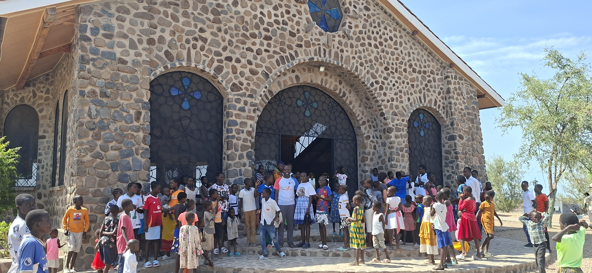
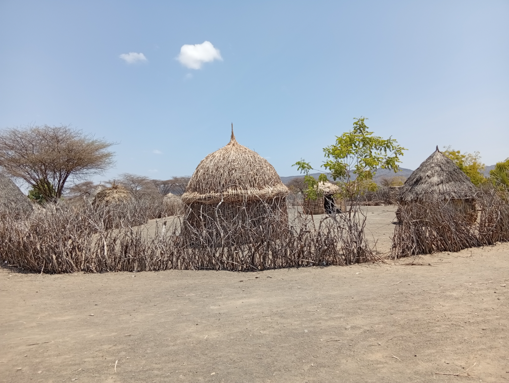
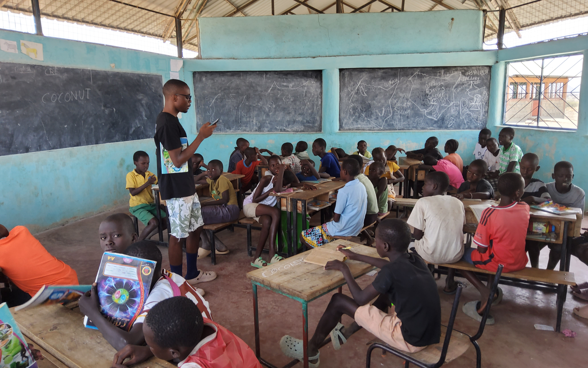
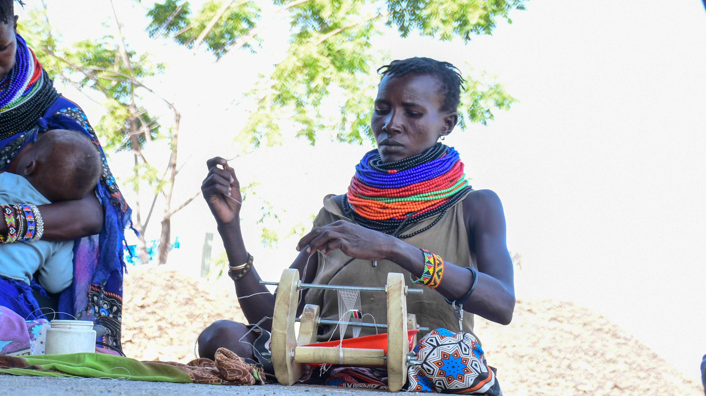
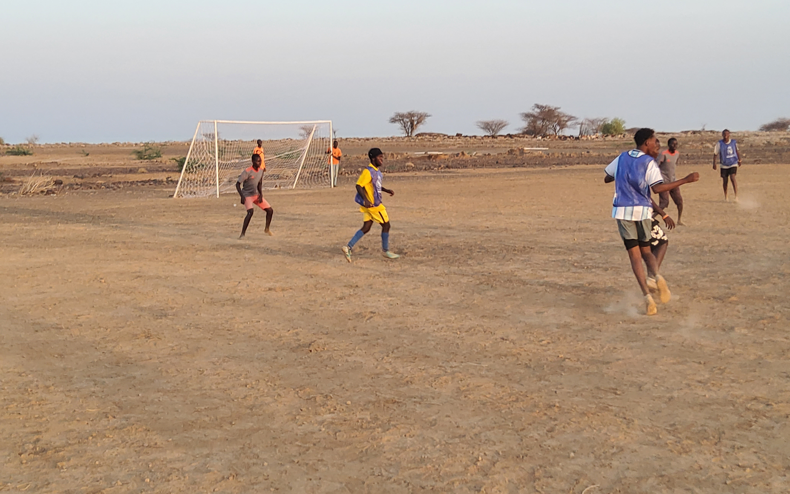
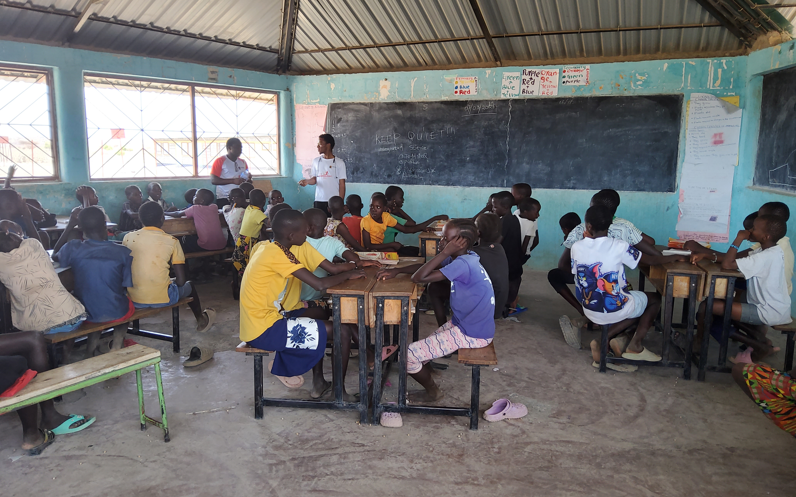
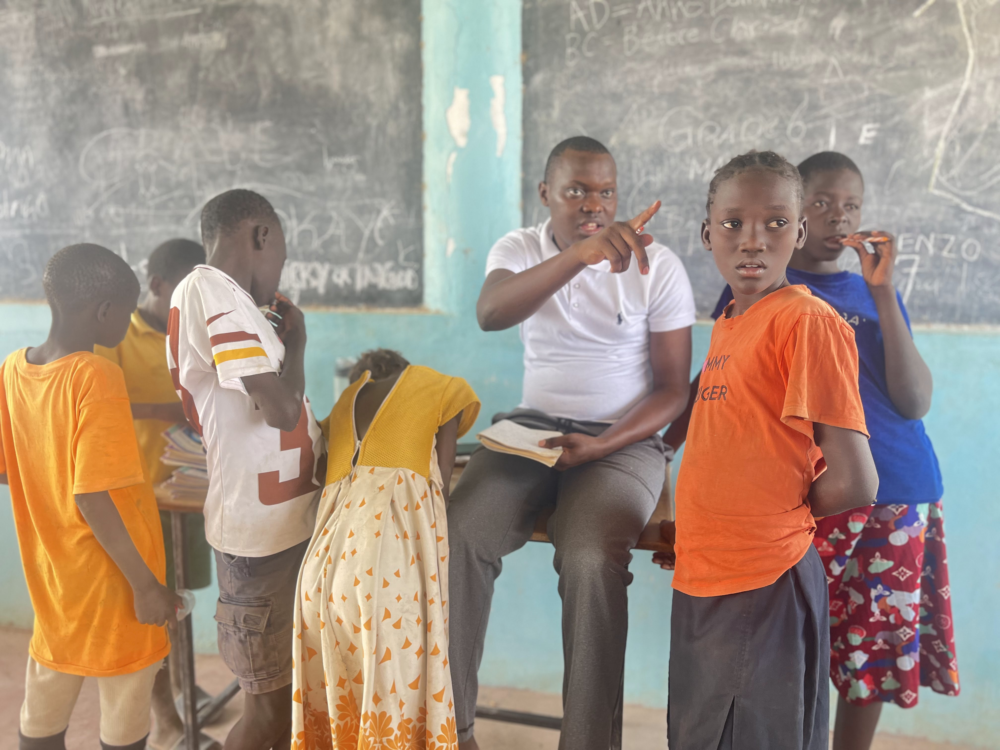

Bringing the Christmas spirit, educational supplies, food distribution and leadership capacity to marginalized communities in Turkana County.
01 The Initiative
Every December, the Strathmore Christmas Caravan collects and distributes food, school supplies and clothing to vulnerable families, creating long-term impact through education and leadership.

Another Kind of Christmas (AKC) operates hand-in-hand with Another Kind of Leadership (AKL). Beyond seasonal giving, our teams run educational revision camps, sports management workshops and multi-day youth mentorship programs to build permanent community resilience.
We invite local and international volunteers to recognize their privilege, collaborate with schools and teachers and weave a new narrative for development across rural Kenya.
02 Visual Journey in Motion




03 Twendeni Shule
Providing personalized academic attention to students, helping them conquer difficult concepts and improve school performance.
Workshops conducted by experienced educators to elevate teaching methodologies and classroom management across local schools.
Sourcing and distributing essential books, learning gear, dry foods and educational materials to families in need.
Engaging in hands-on building and renovation projects to ensure safe, inspiring environments for students to thrive.
04 Academic & Policy Symposium
Our core thematic focus centers on rethinking how boys are educated, supported and empowered, paying careful attention to holistic wellbeing.
Key Programmatic Focus Areas:

Whether you want to sponsor a truck of food supplies, register for the academic symposium, or join as an international volunteer, reach out to our team.